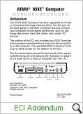

|
Computers
- Main Menu |
Personal Computers
:: XE
Range ::
Design Variations
|
The Atari XE
systems were the logical
upgrade to the XL line of Atari 8-Bit systems. In order to utilise
existing parts, and to ignite sales of Atari products after the XL
inventory was exhausted, Atari engineers were able to quickly design a
new line of 8-Bit products for sale in 1985. In fact, the 130XE
was the first Atari computer to be produced entirely by an automated
manufacturing process, which was a major factor in reducing the
computers cost.
|
| |
|
Of the
new XE systems, 2 machines were launched immediately.
The 65XE with 64Kb of RAM, and
the 130XE which had 128Kb of RAM. The design of
these new machines ensured backward compatibility to the
previous 8-Bit computers and more importantly, they were
very cost effective to manufacture. Both machines
sported the same new look case design, which mirrored the
ST line in aesthetics. |
|
|
|
The design
of the XE computers proved there was still a market for
8-Bit home computers, and while not as popular as the
Commodore 64, the XE range was a huge seller in Europe,
especially in Eastern Europe countries where Atari
could really sell power without the price. Seeing a
huge market In the old Eastern block states, Atari further
reduced the cost of the XE computer and sold it as the
800XE, which was identical to the 65XE. It was
manufactured for approximately 18 months via a Chinese OEM
from 1990-92 and most units contained a buggy version of
the GTIA graphics chip. |
| |
|
Technically,
only minor modifications were made to the silicon of the
XE computers over the older XL range. No major
changes were made that improved on the XL range in any
significant way, apart from the
new memory management chip called "Freddy"
(a chip already designed under Warner for the higher end
XL systems), and a cost reduced expansion connector
called the Extended Cartridge Interface or
ECI, which wasn't present of the lower cost 65XE
in the USA. (although in Europe, most 65XE's did have this
expansion port). The 6502 CPU was the low power
consumption model. |
| |
|
 |
| |
|
The whole point of the XE line
was to keep Atari in the 8-Bit market as cost effectively
as possible, and make as much profit from
the lower end of the market
while it was still viable. Atari already had a
significant market share here, and there was no reason to
abandon it to the competition. |
|
|
|
From another standpoint,
existing Atari 8-Bit users were glad to be supported for
another 6 years or so, and
although the XE line was not a priority within the company
it did develop further products for the significant user
base already installed. |
| |
|
The only further development
within the XE line was the launch of the XEGS, which you
can read about here. |
| |
|
 |
|